Unter dem Menüpunkt
1 Auswertungen
1 Steuer-Meldungen
1 Kammerumlage
kann die Berechnung und Ausgabe der Kammerumlage vorgenommen werden.
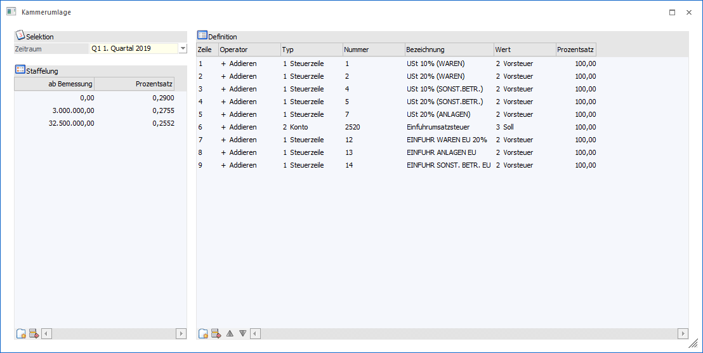
Hinweis:
Beim erstmaligen Öffnen des Menüpunktes bzw. wenn keine Einträge vorhanden sind, werden für die Staffelung die Vorgaben für 2019 automatisch erzeugt und die Einstellungen für das UVA-Formular '6 Kammerumlage' aus den Steuerzeilen übernommen.
Achtung
Existieren in den Steuerzeilen keine Formularzuordnung für das UVA-Formular '6 Kammerumlage', wird auch kein automatischer Eintrag in der Definition erzeugt.
Der Menüpunkt untereilt sich in 3 Bereiche:
ü Selektion
ü Staffelung
ü Definition
Selektion
Ø Zeitraum
Über eine Auswahllistbox kann ausgewählt werden, für welchen Zeitraum die Ausgabe der Kammerumlage erfolgen soll. Dabei stehen alle Perioden des aktuellen Wirtschaftsjahres zur Auswahl und zusätzlich alle Quartale, welche im aktuellen Wirtschaftsjahr enden.
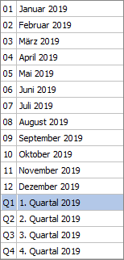
Hinweis:
Bei einem ungeraden Wirtschaftsjahr kann bei einer Quartals-Auswahl die Bemessungsgrundlage für die Berechnung der Kammerumlage aus dem nächsten Wirtschaftsjahr kommen.
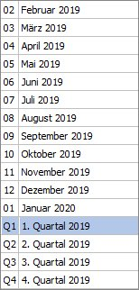
Staffelung
Ø ab Bemessung
Ø Prozentsatz
In diesem Bereich wird definiert, ab welcher Bemessung welcher Prozentsatz für die Berechnung der Kammerumlage gelten soll. Standardmäßig wird hier die KU-Staffelung für 2019 vorgeschlagen.
Tabellen Buttons für den Bereich Staffelung:
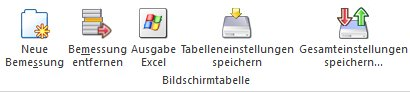
Ø Neue Bemessung
Mit dem Neu-Button kann eine Zeile mit einer Bemessung und einem Prozentsatz hinzugefügt werden. Ist die Zeile unvollständig, bleibt der Fokus in der Zeile stehen und es kann keine Kammerumlage berechnet bzw. ausgegeben werden.
Ø Bemessung entfernen
Mit dem Entfernen-Button kann eine Zeile entfernt werden, dabei wird noch eine Sicherheitsabfrage ausgegeben.
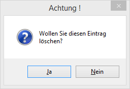
Achtung:
Wenn keine Zeile mit einer Bemessung ab 0,- vorhanden ist, wird automatisch diese mit dem Prozentsatz 0,00 % hinzugefügt.
Definition
In diesem Bereich wird definiert, wie die Bemessung für die Berechnung der Kammerumlage ermittelt werden soll. Dabei stehen folgende Spalten zur Verfügung:
ü Zeilennummer
ü Operator
ü Typ
ü Nummer
ü Bezeichnung
ü Wert
ü Prozentsatz
Ø Zeilennummer
Die Zeilennummer wird automatisch hochgezählt und kann nicht editiert werden.
Ø Operator
Über eine Auswahllistbox erfolgt die Einstellung, ob der ermittelte Wert aus dieser Zeile zur Bemessung addiert oder davon subtrahiert wird.
Ø Typ
Über eine Auswahllistbox kann ausgewählt werden, ob der Wert aufgrund einer Steuerzeile oder eines Kontos ermittelt wird.
Ø Nummer
In dieser Spalte wird die entsprechende Steuerzeile oder die Kontonummer eingetragen. Dabei steht für die Steuerzeile und Kontonummer der Matchcode zur Verfügung, zusätzlich für die Kontonummer noch die Autovervollständigung.
Ø Bezeichnung
Anzeige der Bezeichnung der ausgewählten Steuerzeile oder Kontonummer.
Ø Wert
Über die Auswahllistbox kann ausgewählt werden, welcher Wert für die Berechnung der Bemessungsgrundlage herangezogen werden soll. Bei Steuerzeilen stehen die Werte USt und VSt zur Verfügung. Bei Konten stehen neben den Werten USt und VSt zusätzlich die Werte Soll, Haben und Saldo zur Auswahl.
Ø Prozentsatz
Eingabe eines Prozentsatzes, welcher Anteil des berechneten Wertes als Bemessung verwendet werden soll.
Tabellenbuttons für den Bereich Definition
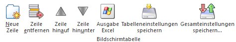
Ø Neue Zeile
Mit dem Button 'Neue Zeile' kann eine neue Definitions-Zeile hinzugefügt werden. Ist die Zeile unvollständig, bleibt der Fokus in der Zeile stehen und es kann keine Kammerumlage berechnet bzw. ausgegeben werden.
Ø Zeile entfernen
Mit dem Entfernen-Button kann eine Zeile entfernt werden, dabei wird noch eine Sicherheitsabfrage ausgegeben.
Ø Zeile hinauf/Zeile hinunter
Mit diesen Buttons kann die Reihenfolge der Definitionszeilen umsortiert werden.
Hinweis:
Die Zeilennummer wird sowohl beim Einfügen oder Entfernen als auch beim Umreihen bzw. Umsortieren entsprechend aktualisiert.
Achtung
Wenn in einer Zeile die Spalte 'Typ' geändert wird, werden die Spalten 'Nummer' und 'Bezeichnung' initialisiert und ggf. wird der Eintrag aus der Spalte 'Wert' zurückgesetzt.
Sowohl die Staffelung als auch die Definition werden mandantenabhängig und wirtschaftsjahrabhängig gespeichert.
Achtung
Die Einstellungen der Berechnung der Kammerumlage werden erst mit der Ausgabe der Kammerumlage gespeichert.
Tabellenbuttons:
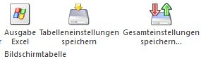
Ø Ausgabe Excel
Durch Anwahl des Buttons "Ausgabe Excel" wird der Inhalt der Tabelle nach Microsoft Excel übergeben.
Ø Tabelleneinstellungen speichern
Die Spalten einer Tabelle können grundsätzlich an beliebige Positionen verschoben, bzw. in der Breite entsprechend angepasst werden. Durch Anwahl des Buttons "Tabelleneinstellungen speichern" werden die Einstellungen benutzerspezifisch gespeichert und bei dem nächsten Aufruf des Programmpunktes wieder vorgeschlagen.
Ø Gesamteinstellungen speichern
Im Gegensatz zu "Tabelleneinstellungen speichern" können mit "Gesamteinstellungen speichern" mehrere Tabellenaufbauten gespeichert und nach Wunsch geladen werden. Zusätzlich werden Sonderfunktionen der Tabelle (z.B. "Spalte gruppieren") ebenfalls bei der Speicherung bedacht.
Für die Ausgabe der Kammerumlage stehen folgende Buttons zur Verfügung:
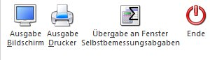
Ø Ausgabe Bildschirm/Ausgabe Drucker
Mit den Buttons Ausgabe Bildschirm oder Ausgabe Drucker werden die Einstellung der Berechnung der Kammerumlage gespeichert und die Ausgabe erfolgt entweder am Bildschirm oder Drucker.
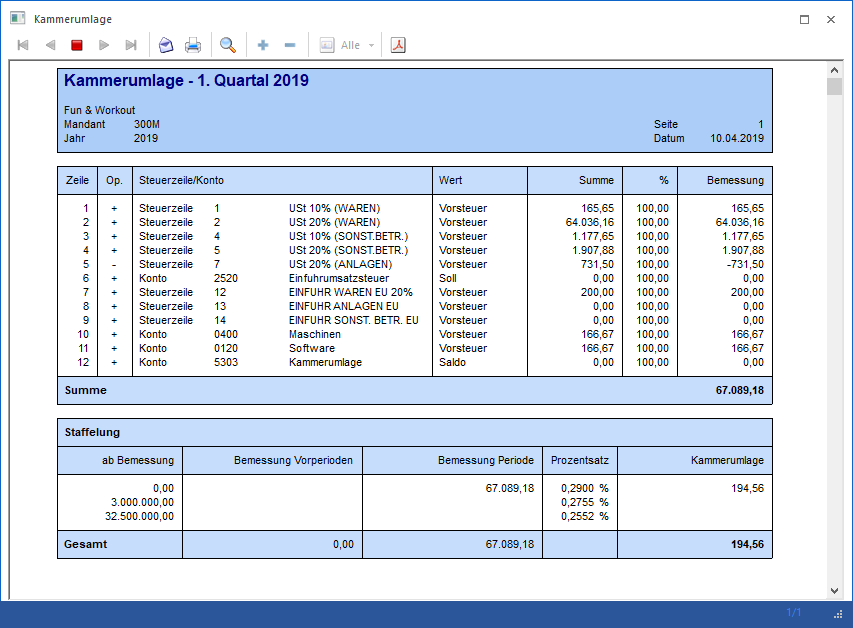
Auf der Auswertung werden nun die einzelnen Zeilen den Definition und dazu jeweils der ermittelte Periodenwert angedruckt, abschließen wird die Summe der ermittelten Bemessungen angezeigt.
Darunter werden die einzelnen Zeilen der Staffelung gedruckt, dazu jeweils der entsprechende Wert aus den Vorperioden, der entsprechende Anteil der Bemessung des aktuellen Zeitraums der festgelegte Prozentsatz und die daraus berechnete Kammerumlage.
In der Summenzeile werden die Summen der Bemessungen der Vorperioden und der aktuellen Periode, sowie der Gesamtwert für die Kammerumlage angeruckt.
Ø Übergabe an das Fenster Selbstbemessungsabgaben
Bei der Übergabe wird keine Auswertung gedruckt, stattdessen wird nur der Gesamtbetrag der Kammerumlage für den ausgewählten Zeitraum berechnet und an den Menüpunkt für die Übermittlung der Selbstbemessungsabgaben übergeben.
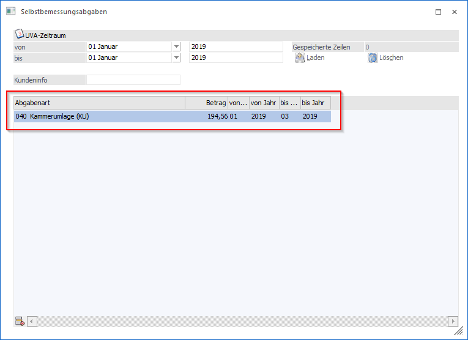
In diesem Fenster wird eine neue Zeile für die Abgabenart 'Kammerumlage' für den entsprechenden Zeitraum eingefügt, der errechnete Betrag wird übernommen und die XML-Datei kann erzeugt werden.
Achtung
Die Übergabe erfolgt nur, wenn der Betrag für die Kammerumlage größer € 0,00 ist, ansonsten wird eine entsprechende Meldung ausgegeben.
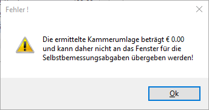
Hinweis:
Vor dem Hinzufügen der Zeile wird geprüft, ob in der Tabelle der Selbstbemessungsabgaben bereits ein Eintrag für diese Abgabenart und den betroffenen Zeitraum vorhanden ist. In diesem Fall wird abgefragt, ob dieser Eintrag aktualisiert werden soll oder nicht. Wird die Meldung mit 'Nein' bestätigt, wird eine neue Zeile eingefügt.
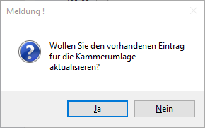
Achtung
Sind bereits 20 Zeilen in der Tabelle der Selbstbemessungsabgaben vorhanden, kann keine zusätzliche Zeile eingefügt werden und es kommt eine entsprechende Meldung.
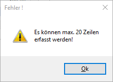
Ø ENDE
Das Fenster wird geschlossen.